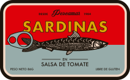
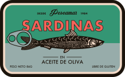
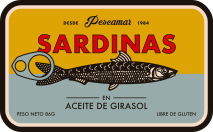

Lisboa
I get eaten by the worms and weird fishes. Picked over by the worm and weird fishes, weird fishes, weird fishes.



Una landing page con muchas sardinas para ejemplos de CSS Scroll-driven animations. Demos de Scroll Progress Timeline y View Progress Timeline.
Ver en GitHubScrollear a la derecha → Para ver la animación de arriba si usas Chrome +116 que soporta la propiedad de CSS timeline-scope.
I get eaten by the worms and weird fishes. Picked over by the worm and weird fishes, weird fishes, weird fishes.

In the deepest ocean, the bottom of the sea. Your eyes, they turn me
Why should I stay here? Why should I stay? I'd be crazy not to follow,
follow where you lead.
Your eyes, they turn me turn me on to phantoms (way out). I follow to the edge of the Earth (way out, way out). And fall off.
Yeah, everybody leaves if they get the chance and this is my chance.
I get eaten by the worms and weird fishes. Picked over by the worm and weird fishes, weird fishes, weird fishes.
I'll hit the bottom, hit the bottom and escape. Escape. I'll hit the bottom, hit the bottom and escape. Escape.